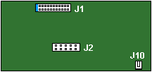

This procedure describes how to install the sample storage module.
Install the module.
Insert the sample storage module into the instrument and position the module on the locating pins.
It might be easier to attach the connectors to the interface PCB before mounting the module completely.
Connect the drain tube on the module to the drain fitting on the instrument base.
Route the reservoir vent and drain tubes from the fluids tray across the lower rear of the module. Insert the vent and drain tubes through the hole in the instrument base with the larger module drain tube.
Mount the top cover onto the sample storage module.
Install the two screws that hold the sample storage module to the instrument base.
Install the right lower cover bracket (two screws).
The location of the bracket on the base might have been marked previously.
Install the upper and lower rear instrument covers.
Note: The upper rear cover has four external screws (replace). The center rear cover has one screw (replace) and three snap retainers.
Connect the module.
Attach these connectors to the sample storage module interface PCB:
Figure 382: Configuration A Sample Storage Interface PCB Figure 383: Configuration B Sample Storage Interface PCB

J1 - MCC PCB (gray, 20-pin, ribbon cable)
J2 - Motor Drive cable (purple, black, and gray, 10-pin)
J3 - Power cable (purple and black, 4-pin)
J10 - Thermistor cable (silver, 2-pin)
Mount the PCB cover onto the interface PCB.
Connect the Peltier power connector to the harness crossing near the rear of the module (black and purple).
Insert the interlock bypass for the upper front covers.
Restore power to the motors using the switch on the Power Distribution PCB labeled "All DC power (except CPU and reagent coolers)".
Verify operation of the sample storage module.
Initialize the instrument.
Confirm the sample storage module alignments to all intersecting devices. Adjust and align as required.
Verify that the sample wheel temperature is within the range of 4 °C to 10 °C. From the user interface, select
Diagnostics > Device Diagnostics > Analog Devices > Analog Data.
It can take up to 30 minutes for the temperature of the module to stabilize.
Perform five cycles of the sample route or the UCTA exerciser or both to ensure proper vessel movement into and out of the sample wheel.
Remove the interlock bypass, close and replace the covers, and initialize the instrument.
Verify system operation.
Perform system verification as stated in the Verification of Service Repair document .